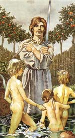

У міфології ірландських кельтів Діан Кехт - бог лікування, часто зображав з величезною п'явкою або змією в руках. Саме Діан Кехт колись врятував Ірландію і має непряме відношення до походження назви річки Берроу. Морриган, люта богиня війни, народила сина такої жахливої ??зовнішності, що власний лікар богів, передбачаючи прийдешні біди, порадив конче буде забитий. Так і було зроблено; і коли Діан Кехт розкрив серце бога немовляти, він виявив в ньому трьох змій, здатних вирости, досягти гігантських розмірів і проковтнути всю Ірландію. Діан Кехт, не втрачаючи ні миті, умертвив змій і зрадив їх вогню, бо він побоювався, що навіть мертві тіла їх можуть заподіяти зло. Більш того, він зібрав їх попіл і висипав його в найближчу річку, бо його не залишав страх, що і попіл їх становить небезпеку; так воно і виявилося, і, як тільки він висипав попіл в воду, вона буквально закипіла, так що в ній негайно загинуло все живе. З тих пір річка і зветься Берроу ( «кипляча»).
У міфології кельтів існували різні версії цього міфу про змій. Є легенда, що тільки дві змії були негайно спалені, а третя зуміла врятуватися і стала згодом величезним змієм, якого згодом вбив той же Діан Кехт. Так вдалося запобігти виконанню пророцтва про біди і нещастя для всієї Ірландії.
Двоє з шістьох дітей Діан Кехт син Мідах і дочка Ейрмід також стали лікарями, вони зробили для Нуади срібну руку, що дозволило йому повернути собі трон короля богів племені Дану (Туатха Де Данаан). І коли Мідах показав батькові свій унікальний дар зцілення, Діан Кехт, злякавшись, що це може підірвати його власну репутацію цілителя, в припадку гніву убив власного сина. Особливо помітна роль Діан Кехт в двох битвах при Мойтуре (Маг Туіред). Діан Кехт виліковував будь-якого пораненого племені Дану, якщо тільки у нього не відрубана голова, не пошкоджений мозок і не зламаний хребет.